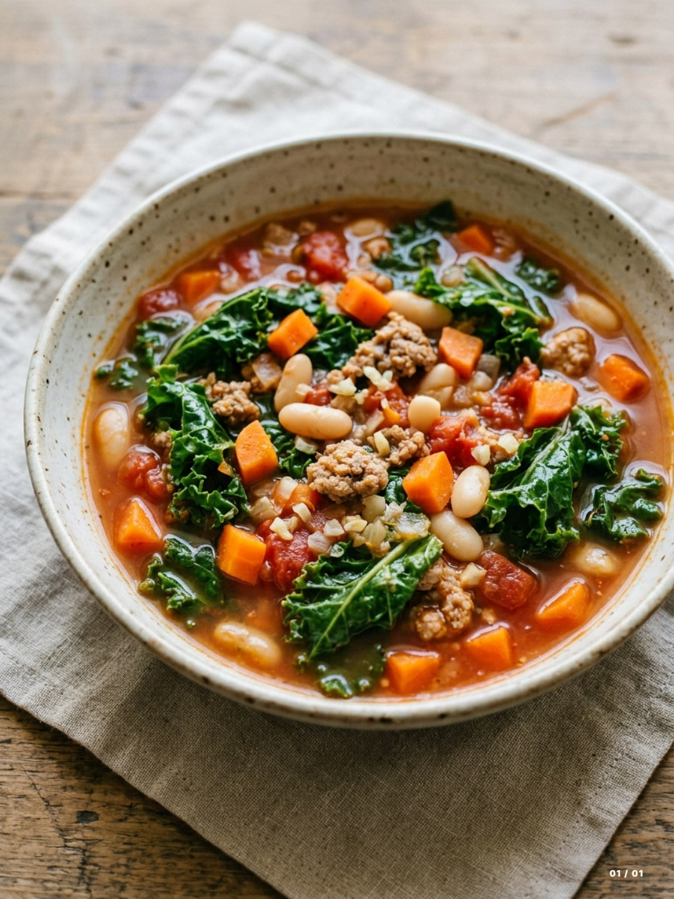

One pot · Italian-inspired
30-Minute Tuscan Ground Turkey and White Bean Soup
A one-pot, Tuscan-inspired soup with ground turkey, cannellini beans, kale, carrots, and tomatoes in a savory broth. Ready in about 30 minutes.
Recipe by Nibble

- Prep
- 5 minutes
- Cook
- 25 minutes
- Total
- 30 minutes
- Serves
- 4
Ingredients
- 1 tablespoon olive oil
- 1 medium yellow onion, finely diced
- 2 medium carrots, diced into ¼-inch pieces
- 1 pound ground turkey
- 3 garlic cloves, minced
- 4 cups low-sodium chicken broth
- 1 can (14.5 ounces) diced tomatoes, with their juices
- 1 can (15 ounces) cannellini beans, rinsed and drained
- 2 cups chopped kale, tough stems removed
- Salt and black pepper, to taste
- Water, as needed to thin the soup
Method
-
Soften the onion and carrots
Heat the olive oil in a large pot over medium-high heat. Add the onion, carrots, and a pinch of salt. Cook for about 4 minutes, stirring often, until the onion softens and the carrots begin to soften.
-
Brown the turkey
Add the ground turkey and a little black pepper. Break the meat into small crumbles with a spoon and cook for 5 to 7 minutes, stirring occasionally, until browned and cooked through. Check that the turkey reaches 165°F (74°C) with a food thermometer; cook longer if needed.
-
Add the garlic
Reduce the heat to medium. Stir in the garlic and cook for about 30 seconds, just until fragrant, without letting it brown.
-
Simmer the soup
Pour in the chicken broth, then add the diced tomatoes with their juices and the drained cannellini beans. Scrape up any browned bits from the bottom of the pot. Bring to a boil, reduce the heat to a gentle simmer, and cook uncovered for 5 minutes.
-
Finish with kale
Stir in the kale and simmer for another 5 minutes, or until the kale and carrots are tender. Add a splash of water if you prefer a thinner soup. Taste, adjust the salt and black pepper, and ladle into bowls.